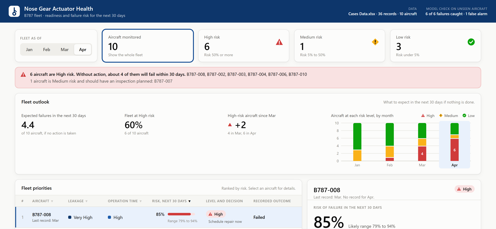

Case 1: predicting B787 nose landing gear actuator failures within 30 days
Nose landing gear hydraulic actuators on the B787 fleet are failing more often than expected. A failure without warning grounds the aircraft and forces an unplanned repair. AcuMain estimates, for every aircraft, the chance its actuator fails in the next 30 days, explains why, and turns that into a decision a manager can take: schedule a repair now, plan an inspection, or take no action.
36 monthly records for 10 aircraft (January to April), with 6 recorded failures. Columns: flight hours and cycles in the month, actuator age, previous failures, maintenance events, leakage level (Normal / Slightly High / High / Very High), operation time (Normal / Slightly High / High), and the answer: failure in the next 30 days (Yes/No).
A monotone, regularised logistic regression (a risk scorecard). Each warning sign adds points; the total becomes a probability. Two safeguards make it hold up on new data:
| Input | Points |
|---|---|
| Starting point | −6.29 |
| Each step up in leakage | +0.92 |
| Each step up in operation time | +2.64 |
| Actuator age (per month) | +0.00 |
risk = 1 / (1 + e−points)
Example, B787-008 in March: leakage Very High (3 steps), operation time High (2 steps): −6.29 + 3×0.92 + 2×2.64 = 1.73, giving 85%.
Ranges: the model is refitted 500 times on resampled fleets (whole aircraft drawn at random); the range shown is the middle 80% of those answers.
Risk levels: High at 50% or more (more likely than not to fail), Medium from 5%, Low under 5%. The 5% line assumes a failure costs about 20 times an inspection; it is one setting and can be changed with GAL's real figure.
Explanation: for each aircraft, the share of the added points that comes from each reading (for B787-008: operation time 66%, leakage 34%).
Because the data is small, the testing matters more than the model. Every score below is on data the model did not train on.
| Test | How | Result |
|---|---|---|
| Unseen aircraft | Hide one aircraft, train on the other nine, score the hidden one; repeat for all ten | 6 of 6 failures caught, 1 false alarm, AUC 0.97, Brier 0.040 |
| The future | Train on January to March only, then score April | 2 of 2 caught, 0 false alarms |
| Penalty setting | Repeat the unseen-aircraft test with the penalty much stronger and much weaker | Same result across the whole range tried (prior scale 0.75 to 3.0) |
The one false alarm, B787-008 in February, did fail the following month, so it was an early warning.
We tested a decision tree, a random forest, gradient boosting and monotone gradient boosting on the same unseen-aircraft test. They all catch 5 or 6 of the 6 failures, so accuracy cannot separate them. The difference appears on combinations of readings the data never contained, which is exactly what new data will bring:
| Situation never seen in the data | AcuMain | Decision tree | Gradient boosting |
|---|---|---|---|
| Leakage Very High, operation time only Slightly High | 29% | 0% | 0% |
| Leakage Normal, operation time High | 26% | 100% | 100% |
| Leakage Slightly High, operation time Slightly High | 6% | 0% | 0% |
The tree models learned a single cliff ("operation time High means failure, anything else is safe"). AcuMain gives a graded, sensible answer.

Python, pandas and SciPy for the data and the model; scikit-learn for the comparison models; a plain HTML, CSS and JavaScript dashboard with SVG charts (fast, no heavy framework); GitHub for version control; Vercel for the live link.